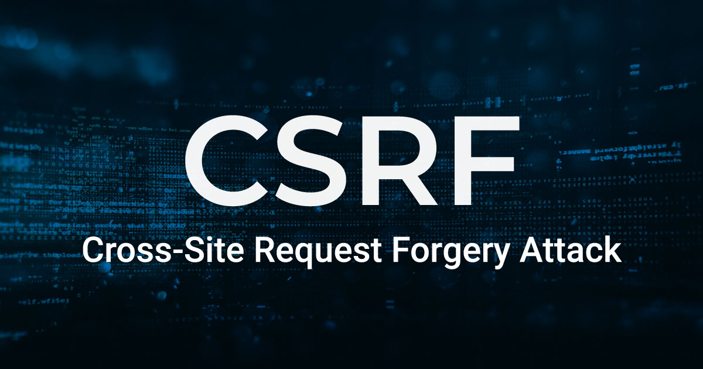
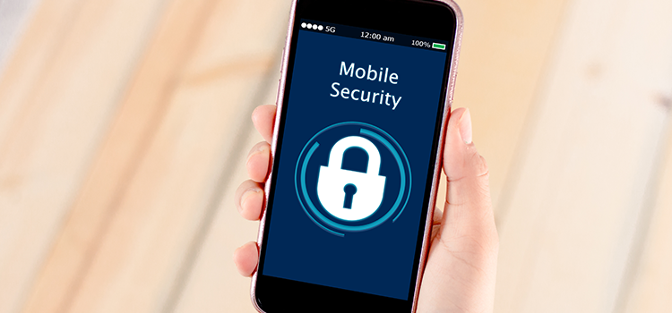

Software code security
Secure coding is the practice of developing computer software in a way that guards against the accidental introduction of security vulnerabilities.

Cross-Site Request Forgery
The concept of XSS is to manipulate client-side scripts of a web application to execute in the manner desired by the malicious user.

SQL injection
SQL injection (SQLi) is an application security weakness that allows attackers to control an application’s database by tricking the application into sending unexpected SQL commands.

Mobile Security
Increasing smartphone adoption rates coupled with the rapid growth in smartphone application counts have created a scenario where private and sensitive information is being pushed to the new device perimeter at an alarming rate.